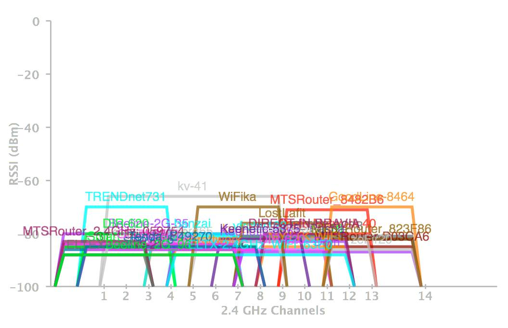

Если у вас дома «глючит» интернет, то скорее всего дело не в провайдере, которого моментально хочется обвинить: «я вам деньги плачу, где мой youtube?!».
Проблема сегодняшних wi-fi сетей (а люди в основном не видят разницы между wi-fi и интернет) — их количество. К примеру, в моей квартире, которая находится не в самом заселённом дворе, на частоте 2,4 ГГц одномоментно толпятся больше 30 только видимых wi-fi сетей, в каждой из которых наверняка не по одному устройству. Страшно представить, что творится в типичной квартире какой-нибудь «Радуги».

Это ещё очень спокойный вариант
Если у вас дома wi-fi используют только современные устройства, перестаньте мучать себя и провайдера, переходите на диапазон в 5 ГГц, а 2,4 освободите для менее удачливых крестьян и рабочих.